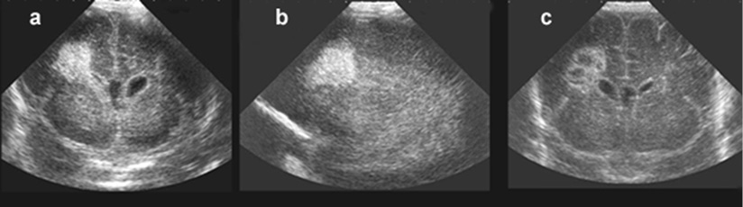
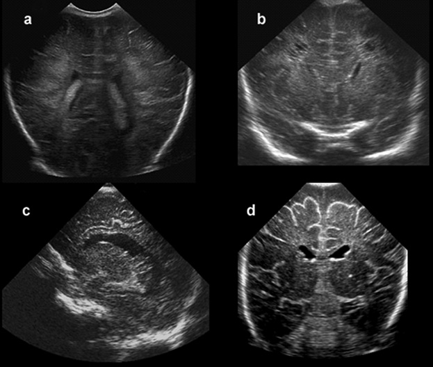
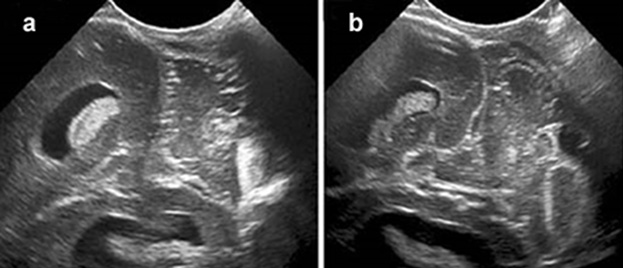

Pomen ultrazvočne preiskave pri prepoznavanju poškodbe osrednjega živčevja pri nedonošenčkih
The value of ultrasound in the diagnosis of brain damage in preterm infants
Izvleček
Ultrazvočna preiskava (UZ) možganov je zanesljivo in neinvazivno orodje za odkrivanje najpogostejših prirojenih in pridobljenih nenormalnosti osrednjega živčevja (OŽ) pri nedonošenih novorojenčkih. Ustrezna oprema z namenskim ultrasonografskim aparatom in ustrezno velikimi sondami, posebnimi ultrasonografskimi nastavitvami za novorojenčke ter obsežnimi izkušnjami ultrasonografista so potrebni za pridobitev optimalne kakovosti ultrazvočne slike. Uporaba dodatnega akustičnega okna, kadar je to potrebno, in serijska ultrazvočna preiskava OŽ v času obravnave nedonošenčka omogočata, da prepoznamo večino poškodb in pridobimo podatke o času pojava in njihovem razvoju. Za bolj natančno določitev mesta in obsega poškodb in za odkrivanje tistih, ki so umeščene zunaj področja ultrazvočnega prikaza ter za prikaz mielinacije, pa ima dodano diagnostično vrednost časovno primerno izbrano magnetnoresonančno slikanje.
Abstract
Cranial ultrasonography (US) is a reliable tool to detect the most frequently occurring congenital and acquired brain abnormalities in preterm neonates. Appropriate equipment, including a dedicated ultrasound machine and appropriately sized transducers with special settings for cranial US of the newborn brain, and ample experience of the ultrasonographist are required to obtain optimal image quality. When, in addition, supplemental acoustic windows are used whenever indicated, and cranial US imaging is performed from admission throughout the neonatal period, the majority of the lesions will be diagnosed, and information on timing and evolution of brain injury as well as on ongoing brain maturation will be obtained. For exact determination of site and extent of lesions, for detection of lesions that (largely or partially) remain beyond the scope of cranial US and for depiction of myelination, a single, well-timed MRI examination is invaluable in many high-risk neonates. However, as cranial US allows serial bedside imaging it should be used as the primary brain imaging modality in high-risk neonates.
1 Uvod
Čeprav sta se z napredkom pri zdravljenju nedonošenčkov v intenzivnih enotah znatno izboljšala njihovo preživetje in izid, ostaja poškodba osrednjega živčevja (OŽ) še vedno glavna posledica prezgodnjega rojstva. Zgodnja prepoznava poškodbe OŽ je pomembna za optimalno zdravljenje in nevrološki izid prezgodaj rojenih otrok, preiskava možganov z ultrazvokom (UZ) pa je prvi korak na poti opredelitve okvare. Na oddelkih za intenzivno nego in zdravljenje so preiskavo OŽ z UZ uvedli v poznih 70. letih prejšnjega stoletja; preiskavo so sprva opravljali skozi temporalno kost z linearno sondo, kmalu pa so kot glavno akustično okno začeli uporabljati veliko mečavo (1). Linearno sondo so kasneje zamenjali z mehansko sektorsko sondo, ki je omogočila večjo resolucijo in širše področje sonografije (1).
Z leti se je pokazalo, da je UZ najprimernejša metoda za odkrivanje poškodb in prirojenih nepravilnosti OŽ v novorojenčkovem obdobju, ker je neinvazivna, varna in poceni, opravimo pa jo ob novorojenčkovi postelji z minimalnim poseganjem v otroka (1,2,3,4,5). UZ je tudi odlično rutinsko orodje za serijsko preiskavo OŽ pri novorojenčkih, s katero prikažemo zorenje možganov in evolucijo morebitnih sprememb. V zadnjem času, ko pri svojem delu uporabljamo tudi visokofrekvenčne sonde in dodatna akustična okna, pridobimo zanesljiv prikaz ne samo možganskih prekatov in bele možganovine ob prekatih, temveč prikažemo tudi subkortikalno belo možganovino, možgansko skorjo in globoko sivo možganovino ter male možgane (1,2,3,4,5). UZ preiskava OŽ pa ima tudi nekatere omejitve: kakovost preiskave je odvisna od veščin in izkušenj preiskovalca, poleg tega pa je nekatera področja možganov težko prikazati. Tako lahko ostanejo določene nepravilnosti zunaj sonografskega področja (1,2,3,4,5).
V prispevku so navedene indikacije za ultrazvočno preiskavo OŽ nedonošenčkov. Na kratko so opisani standardni postopki preiskave, možnosti za izboljšanje kakovosti slike, uporaba dodatnih akustičnih oken in prikaz zadnje kotanje. Nadalje so navedene najpogostejše nenormalne najdbe, a tudi omejitve UZ preiskovanja, ko je za oceno stanja potrebno uporabiti druge slikovne preiskave.
2 Standardni postopek ultrazvočne preiskave osrednjega živčevja
Pri standardnih UZ preiskavah je velika mečava glavno akustično okno. Za čimbolj celovit pregled OŽ svetujejo uporabo večjih sond z različnimi frekvenčnimi območji. Na splošno je dobro kakovost UZ-slike možno pridobiti s sondo frekvence od 7,5 do 8,5 MHz. Sonde z višjo frekvenca uporabimo za pregledovanje površinskih struktur, medtem ko sonde z nižjo frekvenco in s tem boljšo globinsko resolucijo omogočajo boljši pogled na globlje strukture, kot je npr. globoka siva možganovina. S prilagajanjem žariščne točke izboljšamo ločljivost na globino, ki jo želimo podrobneje pregledati. Sonde so na voljo v različnih oblikah in velikostih. Najbolje je, da je površina sonde (»footprint«) dovolj majhna, da se prilega veliki mečavi (2,6,7).
Pri standardnem ultrazvočnem pregledu celotnega OŽ možgane prikažemo v dveh ravninah – v t. i. koronarnem in sagitalnem preseku. Koronarni presek dobimo s pozicioniranjem sonde na sredino velike mečave z označevalcem, ki je usmerjen proti desnemu ušesu; sondo pri preiskovanju premikamo in nagibamo naprej in nazaj in tako dobimo šest standardnih slik. Za pregled v sagitalni ravnini sondo zavrtimo za 90 ° z označevalcem proti otrokovemu obrazu: sondo premikamo in nagibamo od sredine na desno in levo ter pridobimo vsaj pet standardnih slik. Priporočeno je, da v digitalnem arhivu shranimo vsaj šest slik v standardnih koronarnih in pet v sagitalnih presekih ter vse zaznane nenormalnosti (2,6,7).
3 Uporaba dodatnih akustičnih oken
Z uporabo dodatnih akustičnih oken je možno optimalno vizualizirati možgansko deblo in zadnjo kotanjo. Običajno uporabimo zadnjo mečavo, mastoidno in temporalno okno (2,6,7).
3.1 Mastoidno okno
Mastoidno okno, ki se nahaja med temporalnimi, parietalnimi in okcipitalnimi kostmi, omogoča podrobni prikaz zadnje kotanje, vključno s cerebelumom, 4. prekatom in cisterno magno. Uporabimo najmanjšo sondo, ki jo položimo za uho: če je označevalec položen vodoravno in usmerjen proti čeljusti, dobimo aksialni presek, ko pa je sonda zasukana za 90 ° navzgor in označevalec usmerjen proti lobanjskemu dnu, dobimo koronarni presek (2,6,7).
3.2 Temporalno okno
Temporalno okno se nahaja nad ušesom. Sondo postavimo približno 1 cm nad in anteriorno od zunanjega meatusa; če je označevalec v vodoravnem položaju, dobimo transverzalni pogled na mesencephalon, možgansko deblo, krog Willisa in zgornjega dela cerebeluma. Kakovost slike je odvisna od debeline kosti in s tem od starosti otroka pri UZ-preiskavi (2,6,7).
3.3 Zadnja mečava
Zadnja mečava se nahaja med lambdoidnim in sagitalnim šivom. Če sondo namestimo na sredino mečave vodoravno z označevalcem proti desnemu ušesu, pridobimo koronarni prikaz, navpično z označevalcem proti lobanjskemu dnu pa parasagitalni prikaz. Zadnja mečava omogoča dobro vizualizacijo okcipitalnih rogov stranskih prekatov, parenhim v okcipitalnem režnju, tentorij in cerebelum (2,6,7).
Kombinacija prikaza skozi vsa akustična okna – velika mečava, zadnja mečava in mastoidno okno na obeh straneh – je potrebna tudi za optimalni pregled venskega sistema OŽ. Preko velike mečave z barvno dopplersko preiskavo pregledamo globoki venski sistem, vključno z notranjimi možganskimi venami, spodnjim sagitalnim sinusom, veliko možgansko veno in ravnim sinusom. Zgornji sagitalni sinus in oba prečna sinusa je mogoče vizualizirati skozi veliki mečavi. Preko obeh mastoidnih oken prikažemo dele transverzalnih in sigmoidnih sinusov (8). Tromboza možganskih venskih sinusov je sicer redko stanje, vendar sta zgodnji diagnosticiranje in zdravljenje pomembni za zmanjšanje tveganja poškodbe OŽ in ponavljajočih se tromboz (8).
4 Zorenje osrednjega živčevja
Pri zelo nedonošenih novorojenčkih se proces zorenja OŽ, ki se običajno odvija v zadnjem trimesečju nosečnosti, nadaljuje po rojstvu. Fiziološki procesi, ki vključujejo giracijo, mielinizacijo, migracijo celic glije in spremembe v globoki sivi možganovini, povzročijo pomembne spremembe v UZ-videzu skozi daljše obdobje (2). Pomembno je, da jih prepoznamo in jih ločimo od patoloških dogajanj. Najpomembnejše spremembe, ki jih je mogoče prikazati z UZ, so:
4.1 Giracija
Z UZ-sledenjem prezgodaj rojenega novorojenčka spremljamo spremembe v UZ-videzu površine možganov iz skoraj gladke do popolne zgradbe z girusi in sulkusi v obdobju donošenosti (9,10).
4.2 Spremembe ehogenosti v beli možganovini
Povišana ehogenost znotraj bele možganovine ob prekatih je lahko posledica normalnega procesa zorenja. Je posledica migracije celic glije in sprememb v vsebnosti vode v celicah ter zorenja okolnih možganskih struktur. To ehogenost je potrebno ločiti od nehomogene hiperehogenosti in/ali ehogenosti omejenih področij, ki je odraz patoloških sprememb v beli možganovini. Homogena ehogenost ob prekatih, ki je manjša kot ehogenost horoidnega pleteža, je normalna najdba v obdobju nedonošenosti, čeprav velja, da je za pravilno ugotovitev spremenjene ehogenosti v možganski belini izredno pomembna izkušenost preiskovalca (9,10).
4.3 Spremembe ehogenosti v globoki sivi možganovini
Pri zelo nedonošenih novorojenčkih je ehogenost v bazalnih jedrih in občasno tudi talamusa višja v primerjavi z ehogenostjo okolnih možganskih struktur. Ta difuzna, subtilna ehogenost je vidna prvi dan po rojstvu in postopoma izginja do obdobja donošenosti. Strokovnjaki navajajo, da je prisotna pri več kot 90 % zelo prezgodaj rojenih nedonošenčkov in je povezana z normalnim zorenjem bazalnih jeder in talamusa ter je posledica visoke vsebnosti vode in/ali nizke gostote vlaken v nezrelih sivih jedrih (9,10).
To fiziološko ehogenost pa je potrebno razlikovati od bolj linearno povišane ehogenosti, kar vidimo ob lentikostriatnih vaskulopatijah in punktiformnih ter žariščnih hiperehogenostih, ki so posledica krvavitve/ishemije v bazalnih jedrih in/ali talamusu (9,10).
4.4 Mielinizacija
Procesa mielinizacije ni mogoče prikazati z UZ preiskavo OŽ, čeprav so nekatere UZ značilnosti povezane s tem procesom. Mielinizacijo optimalno ocenjujemo z MRI.
5 Biološki učinki UZ preiskav na nezrelo možgansko tkivo
Ključni element pri ocenjevanju varnosti diagnostičnega UZ je upoštevanje možnih bioloških učinkov. UZ lahko povzroči neželene biološke učinke s toplotnim ali netoplotnim delovanjem (11). Temperatura nad normalno lahko škodljivo vpliva na biološke sisteme; na različnih živalskih vrstah so dokazali s toploto povzročeno teratogenezo. Predlagana so bila različna maksimalna „varna“ zvišanja temperature. Pri temperaturah, ki so manjše ali enake 2 °C nad normalno telesno temperaturo (37 °C), ne obstajajo pomembni škodljivi biološki učinki v obdobju temperaturnega zvišanja do 50 ur. Ob tem pa je potrebno upoštevati dodatne dejavnike, kot so narava akustičnega polja
6 Posebnosti UZ preiskave pri prezgodaj rojenem otroku
6.1 Krvavitev v možganske prekate
Skoraj 80 % krvavitev v možganske prekate (KMP) nastane v prvih 72 urah po rojstvu; lahko je prisotna že ob rojstvu ali pa se razvije do 96 ur po rojstvu. Ta »atipičen pozni« pojav je, kot navajajo, povezan z motnjo v prokoagulacijskih faktorjih, predvsem z mutacijo faktorja V Leiden (12,13,14). Dejavniki tveganja za KMP so sicer večinoma povezani z zapleti umetnega predihavanja (pnevmotoraks, hiperkarkapnija) ali s hemodinamskimi dejavniki (nihanje krvnega tlaka ali pretoka krvi) (1). Domnevajo, da je zmanjšana pojavnost teh dejavnikov ob izboljšani oskrbi nedonošenčka privedla do postopnega zniževanja incidence KMP. Dodatno se je incidenca KMP zmanjšala predvsem pri novorojenčkih mater, ki so pred porodom prejele steroide, saj ti stabilizirajo pretok v žilju germinativnega matriksa (15).
KMP se običajno začne v nezrelih krvnih žilah v subependimalnem prostoru (subependimalna krvavitev) (6,7,12,13,14,16). Lahko se razširi v prekate (KMP II. stopnje zapolnjuje manj kot 50 % volumna stranskega prekata; KMP III. stopnje zapolnjuje več kot 50 % volumna stranskega prekata, ki je tudi dilatiran (6,7,12,13,14,16). Posthemoragična dilatacija prekata (PHDP) se razvije pri 25–50 % nedonošenčkov 7–14 dni po hudi KMP (1,16,17,18). Z UZ lahko te spremembe natančno vidimo in sledimo: običajno izmerimo ventrikularni indeks (VI – razdalja med falksom in stransko steno sprednjega roga stranskega prekata v koronarni ravni v predelu foramen Monroe, ki ga primerjamo z normativnimi vrednostmi za gestacijsko starost) ter širino sprednjega in zadnjega roga stranskih prekatov v sagitalni ravni. Na podlagi meritev se odločamo o terapevtski obravnavi (1,16,17,18). Vpliv sprememb znotrajlobanjskega tlaka na pretok krvi spremljamo z dopplerskimi meritvami: z naraščanjem znotrajlobanjskega tlaka se namreč poveča maksimalna hitrost sistoličnega pretoka, čemur sledi zmanjšanje ali odsotnost končne diastolične hitrosti toka (19). Še vedno ni jasno, ali je izid otrok s PHDP boljši pri zgodnjem (VI na 97p) ali poznem dreniranju prekatov (ko VI presega za 4 mm 97 p). Tisti, ki zagovarjajo zgodnje ukrepanje, so zaskrbljeni predvsem zaradi neželenih učinkov krvi v prekatih in pritiska progresivne dilatacije na okolno ranljivo belo možganovino. Poročali so tudi o boljšem nevrološkem izidu otrok s PHDP in zgodnjim dreniranjem v primerjavi s tistimi, pri katerih je bilo dreniranje opravljeno pozno (16,20).
Naslednji pomembni zaplet KMP je hemoragični infarkt ob prekatih (HI), ki nastane zaradi oslabljenega venskega dreniranja medularnih ven v beli možganovini ob prekatih. Ultrazvočno vidimo značilno enostransko, istostransko, trikotasto hiperehogenost v beli možganovini ob prekatih (1,2,6,7). Ehogenost lezije se postopoma znižuje, prehodno se spreminja v eholucenco do končne ene ali več manjših porencefalnih cist, ki mejijo s stranskim prekatom (Slika 1). Velikost in mesto HI napovedujeta izid. HI v frontalnem režnju nosi najmanjše tveganje za izid z enostransko spastično cerebralno paralizo, medtem ko so novorojenčki s HI-lezijo v trigonumu najbolj ogroženi za razvoj cerebralne paralize. Otroci s HI v temporalnem režnju pa so bolj ogroženi zaradi motenj vida in motenj v duševnem razvoju (21,22).

6.2 Poškodba bele možganovine
Etiologija poškodbe bele možganovine pri nedonošenčkih je večfaktorska in jo povezujejo z ranljivostjo nevronov in preoligidendrocitov, ki jih poškoduje ekscitotoksično delovanje prostih radikalov (lahko že antenatalno), sproženo ob procesih ishemije in vnetja. K nastanku okvare lahko prispevajo tudi motnje v možganskem pretoku, ki jih generirajo različni lokalni in sistemski dejavniki, kot npr.: arterijski krvni tlak, nasičenost arterijske krvi s kisikom, vrednost hematokrita in vsebnost ogljikovega dioksida v krvi (1,23,24,25).
Poškodbe bele možganovine, ki jih srečujemo pri nedonošenčkih, lahko razdelimo v dve skupini: klasična t. i. cistična obprekatna levkomalacija (c-PVL) in difuzna – necistična. Patoanatomsko pri klasični c-PVL nastane žariščna nekroza, malacija in izguba vseh celičnih elementov v možganovini ob prekatih (1,2,6,16,23). Z UZ najprej vidimo nehomogeno povišano ehogenost, ki napreduje v cistične spremembe, ki jih zelo lahko prikažemo z UZ; da jih zaznamo, pa je izrednega pomena serijska UZ preiskava, saj se cistične spremembe razvijejo šele 2–4 tedne od začetka patološkega procesa. Kasneje, v naslednjih tednih ali mesecih, se tekočina iz cist resorbira z adhezijo sten cist. Hkrati nastaja glioza, ki jo z UZ-preiskavo težko zaznamo. Posledica tega procesa je izguba bele možganovine – atrofija (1,2,6,7). Z UZ sledenjem sprememb kasneje ugotovimo dilatacijo stranskih in tretjega prekata, razoblikovanost stranskih prekatov, tanjšo plast bele možganovine okoli prekatov, tanek korpus kalosum, široko intrahemisferično fisuro in povečanje zunajmožganskega prostora (1,2,6,7). Tako kot pri PVHI sta obseg in zlasti mesto cistične spremembe pomembna za napoved izida otroka s c-PVL (1,2). Še posebej so za razvoj cerebralne paralize rizični nedonošenčki z obsežnimi cističnimi spremembami v parieto-temporalnem režnju.
Pri difuzni okvari bele možganovine je patofiziološko v ozadju poškodba premielinizirajočih oligodendrocitov z izrazito astrocitozo in mikrogliozo. Poškodba oligodendrocitov povzroči pomanjkanje diferenciranih oligodendrocitov ter hipomielinizacijo in zato zmanjšane prostornine OŽ; UZ znaki, ki so posledica tega procesa, so predvsem tanek korpus kalosum, široka intrahemisferična fisura in povečanje ekstracerebralnega prostora (23,24,25) (Slika 2).

Čeprav je znano, da se poškodba bele možganovine lahko začne že pred rojstvom in se nadaljuje v zgodnjem novorojenčkovem obdobju, pa pri nekaterih nedonošenčkih c-PVL nastane akutno in pozno, npr. ob prebolevanju sepse ali nekrotizantnega enterokolitisa. Poleg tega so poznani tudi nekateri nevrotropni virusi, kot so enterovirus, paraechovirus in rotavirus, ki prav tako lahko povzročijo proces c-PVL pri nedonošenčkih. Zaradi vsega navedenega je priporočljivo ponoviti UZ preiskavo OŽ po kakršnem koli kliničnem poslabšanju ali pri nedonošenčkih, ki so ponovno sprejeti v bolnišnico zaradi prebolevanja akutne okužbe (1).
Bolj kakovostna antenatalna in perinatalna oskrba prezgodaj rojenih novorojenčkov je vplivala na znižanje incidence c-PVL, kar so poročali v številnih raziskavah (1). Tako so v več študijah, v katerih so analizirali spremembe v OŽ pri nedonošenčkih z magnetnoresonančnim slikanjem (MRI), našli zelo majhno število otrok s c-PVL in več takih z difuzno, subtilno okvaro bele možganovine. Več študij, opravljenih v zadnjih 10 letih, pa je pokazalo, da je vloga UZ pri prepoznavi subtilne okvare v beli možganovini omejena in se kot zlati standard priporoča slikanje z MRI tako za diagnosticiranje kot za napoved izida (26,27,28). V dveh nedavno objavljenih raziskavah, v katerih so avtorji proučevali povezavo med MRI preiskavo OŽ in izidom otrok v starosti 5 in 9 let, so ugotovili, da so bile zmerne do hude patološke spremembe v beli možganovini povezane z nižjim verbalnim in celotnim inteligenčnim količnikom, višjo incidenco cerebralne paralize ter večjo potrebo po dodatni učni pomoči v primerjavi z zdravimi vrstniki (26,27,28).
6.3 Zadnja kotanja
V zadnjih letih je z uporabo dodatnih akustičnih oken vse bolj mogoče prepoznati patološke spremembe v malih možganih. S povečanjem preživetja zelo prezgodaj rojenih novorojenčkov (gestacijska starost 24–28 tednov) in pogostejšo rutinsko uporabo mastoidnega okna pri UZ preiskavi se tako krvavitve kot ishemične spremembe v cerebelumu sedaj pogosto prepoznajo v tej skupini otrok. Cerebelum ima v drugi polovici nosečnosti izredno hiter in zapleten razvoj (29). S tridimenzionalnim volumetričnim UZ

Čeprav bi po krvavitvi v cerebelum pričakovali pri otrocih predvsem težave v gibalnem razvoju, pa so avtorji, ki so analizirali izid otrok samo s spremembo v zadnji kotanji brez supratentorialnih sprememb, ugotavljali predvsem zaostanek v razvoju na jezikovnem in duševnem področju, vedenjske motnje ter motnje avtističnega spektra. Izolirana poškodba vermisa pa je bila izključno v povezavi s težavami s področja socialnega delovanja in motnjami avtističnega spektra (32).
7 Protokol ultrazvočnega sledenja
Pri novorojenčkih, ki so rojeni prezgodaj, s serijsko ultrazvočno preiskavo možganov pridobimo večjo povednost in zanesljivost tovrstnega preiskovanja. Protokol omogoča pravočasno prepoznavo poškodb OŽ, ki nastanejo tipično pri nedonošenčkih (Tabela 1). S sledenjem tudi spremljamo razvoj okvare in zorenje osrednjega živčevja. Proces zorenja OŽ, ki poteka v zadnjem trimesečju nosečnosti, je s ponavljanjem UZ-preiskav mogoče zaznati. Pomembno je, da normalen fiziološki proces zorenja ločimo od morebitne patologije (2).
|
GS 23–26 tednov |
G27–29 tednov |
GS 29–32 tednov |
GS 32–35 tednov |
|
1., 2., 3. DPR |
1. DPR |
1. DPR |
1. DPR |
|
1. T |
1. T |
1. T |
|
|
2. T |
2. T |
||
|
2x tedensko do 31. T |
31. T |
3. T |
3. T |
|
36. T |
36. T |
||
|
40. T |
40. T |
40. T |
40. T |
DPR, dan po rojstvu; GS, gestacijska starost; T, teden.
7.1 Omejitev ultrazvočnega pregleda osrednjega živčevja
Medtem ko je ultrazvočna preiskava koristna kot prva metoda izbire za opredelitev patološkega procesa in omogoča spremljanje razvoja spremembe, pa MRI daje natančnejše informacije glede obsega in lege te spremembe. Superiorna je pri prepoznavi dodatnih subtilnih sprememb v beli možganovini in malih možganih, pri oceni stopnje mielinizacije in struktur v zadnji kotanji in možganskem deblu ter ima večjo napovedno vrednost. Z MRI lahko ugotovimo spremembe, ki so na površini korteksa ali so zunaj vidnega polja, dosegljivega z UZ (33). Izsledki preiskave z MRI z oceno prisotnosti ali odsotnosti mielinizacije posteriornega kraka kapsule interne so v pomoč pri napovedovanju razvoja cerebralne paralize in zaostanka v grobem motoričnem razvoju. Medtem ko je umestitev spremembe pomemben napovedni dejavnik umskega in vedenjskega izida ter motenj razvoja vida (22).
Subtilne spremembe v beli možganovini so lahko hemoragičnega ali ishemičnega izvora. Sočasna uporaba sofisticirane tehnologije MRI, kot sta difuzijsko obteženo slikanje (
8 Zaključek
Neinvazivnost UZ pri pregledovanju OŽ omogoča uporabo te metode preiskovanja OŽ ob otrokovi postelji in je nenadomestljiva primarna preiskava, s katero pri nedonošenih otrocih spremljamo normalno zorenje in rast možganov, zgodaj prepoznamo morebitne nepravilnosti in spremljamo njihov razvoj.
Napotki za prihodnost uporabe UZ v prvi vrsti vključujejo standardno in rutinsko uporabo dodatnih akustičnih oken. Dodatno je potrebno več napora vložiti v zanesljivo odkrivanje poškodb bele možganovine pri zelo nedonošenih novorojenčkih s kombinacijami sond in frekvenčnih območij. Za izboljšanje kakovosti UZ slike pa bo potrebno v prihodnosti raziskati tudi vlogo 3D- in 4D-tehnike, uporabo UZ kontrastnih sredstev ter UZ elastografije.